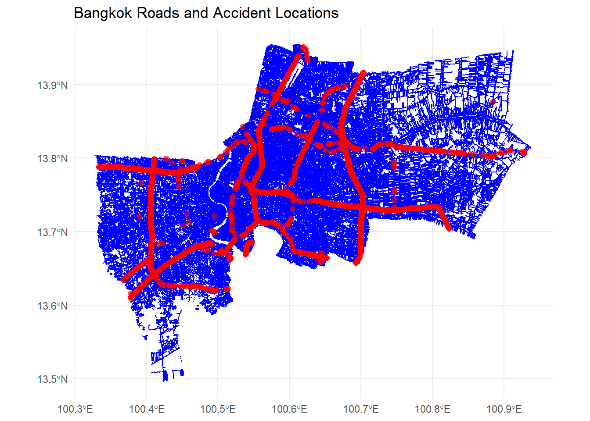

pacman::p_load(sf, tidyverse, tmap, spNetwork)test
#! eval:false
acc <- read_csv("data/thai_road_accident_2019_2022.csv") %>%
mutate(Month_num = month(incident_datetime)) %>%
mutate(Month_fac = month(incident_datetime,
label = TRUE,
abbr = TRUE)) %>%
mutate(dayofweek = weekdays(incident_datetime))%>%
filter(!is.na(longitude) & !is.na(latitude)) %>% # Remove rows with missing coordinates
st_as_sf(coords = c("longitude", "latitude"),
crs=4326) %>%
st_transform(crs = 32647)Rows: 81735 Columns: 18
── Column specification ────────────────────────────────────────────────────────
Delimiter: ","
chr (10): province_th, province_en, agency, route, vehicle_type, presumed_c...
dbl (6): acc_code, number_of_vehicles_involved, number_of_fatalities, numb...
dttm (2): incident_datetime, report_datetime
ℹ Use `spec()` to retrieve the full column specification for this data.
ℹ Specify the column types or set `show_col_types = FALSE` to quiet this message.write_rds(acc, "data/acc.rds")acc <- read_rds("data/acc.rds")bangkok_acc_data <- acc %>%
filter(province_en == "Bangkok")
head(bangkok_acc_data)Simple feature collection with 6 features and 19 fields
Geometry type: POINT
Dimension: XY
Bounding box: xmin: 645371.9 ymin: 1506578 xmax: 684102 ymax: 1525144
Projected CRS: WGS 84 / UTM zone 47N
# A tibble: 6 × 20
acc_code incident_datetime report_datetime province_th province_en
<dbl> <dttm> <dttm> <chr> <chr>
1 629691 2019-01-01 03:05:00 2019-01-01 03:05:00 กรุงเทพมหานคร Bangkok
2 629689 2019-01-01 05:42:00 2019-01-01 05:42:00 กรุงเทพมหานคร Bangkok
3 604307 2019-01-01 10:10:00 2019-03-06 10:49:00 กรุงเทพมหานคร Bangkok
4 3793736 2019-01-01 17:30:00 2020-03-11 13:15:00 กรุงเทพมหานคร Bangkok
5 599070 2019-01-01 19:20:00 2019-01-01 20:57:00 กรุงเทพมหานคร Bangkok
6 613605 2019-01-01 21:40:00 2019-11-18 10:57:00 กรุงเทพมหานคร Bangkok
# ℹ 15 more variables: agency <chr>, route <chr>, vehicle_type <chr>,
# presumed_cause <chr>, accident_type <chr>,
# number_of_vehicles_involved <dbl>, number_of_fatalities <dbl>,
# number_of_injuries <dbl>, weather_condition <chr>, road_description <chr>,
# slope_description <chr>, Month_num <dbl>, Month_fac <ord>, dayofweek <chr>,
# geometry <POINT [m]>write_rds(bangkok_acc_data,"data/bangkok_acc_data.rds")bangkok_acc_data <- read_rds("data/bangkok_acc_data.rds")thai_one_map <- st_read(dsn = "data",
layer = "hotosm_tha_roads_lines_shp")Reading layer `hotosm_tha_roads_lines_shp' from data source
`D:\cbzhang2023\ISSS626-1\Take-home_Ex\Take-home_Ex01\data'
using driver `ESRI Shapefile'
Simple feature collection with 2792590 features and 14 fields
Geometry type: MULTILINESTRING
Dimension: XY
Bounding box: xmin: 97.34457 ymin: 5.643645 xmax: 105.6528 ymax: 20.47168
CRS: NAthai_one_mapSimple feature collection with 2792590 features and 14 fields
Geometry type: MULTILINESTRING
Dimension: XY
Bounding box: xmin: 97.34457 ymin: 5.643645 xmax: 105.6528 ymax: 20.47168
CRS: NA
First 10 features:
name name_en highway surface smoothness
1 ถนนฉลองกรุง Chalong Krung Road secondary paved <NA>
2 ซอยฉลองกรุง 1/1 Soi Chalong Krung 1/1 residential <NA> <NA>
3 <NA> <NA> secondary_link <NA> <NA>
4 <NA> <NA> service <NA> <NA>
5 ถนนฉลองกรุง Chalong Krung Road secondary concrete <NA>
6 <NA> <NA> service <NA> <NA>
7 ถนนเอราวัณ 1 Erawan 1 Road tertiary <NA> <NA>
8 <NA> <NA> path unpaved <NA>
9 <NA> <NA> service <NA> <NA>
10 <NA> <NA> residential <NA> <NA>
width lanes oneway bridge layer source name_th osm_id osm_type
1 <NA> <NA> yes <NA> <NA> <NA> ถนนฉลองกรุง 1125681229 ways_line
2 <NA> <NA> <NA> <NA> <NA> <NA> ซอยฉลองกรุง 1/1 594401607 ways_line
3 <NA> <NA> yes <NA> <NA> <NA> <NA> 472283206 ways_line
4 <NA> <NA> <NA> <NA> <NA> <NA> <NA> 594401608 ways_line
5 <NA> 2 yes yes 1 Bing ถนนฉลองกรุง 116847248 ways_line
6 <NA> <NA> <NA> <NA> <NA> <NA> <NA> 317485095 ways_line
7 <NA> <NA> <NA> <NA> <NA> <NA> ถนนเอราวัณ 1 378672881 ways_line
8 <NA> <NA> <NA> <NA> <NA> GPS <NA> 1238351123 ways_line
9 <NA> <NA> <NA> <NA> <NA> <NA> <NA> 909942692 ways_line
10 <NA> <NA> <NA> <NA> <NA> <NA> <NA> 694824299 ways_line
geometry
1 MULTILINESTRING ((100.7913 ...
2 MULTILINESTRING ((100.7882 ...
3 MULTILINESTRING ((100.7844 ...
4 MULTILINESTRING ((100.7873 ...
5 MULTILINESTRING ((100.7831 ...
6 MULTILINESTRING ((100.7931 ...
7 MULTILINESTRING ((100.6416 ...
8 MULTILINESTRING ((98.87378 ...
9 MULTILINESTRING ((100.193 1...
10 MULTILINESTRING ((100.1994 ...admin_boundaries <- st_read(dsn = "data",
layer = "tha_admbnda_adm1_rtsd_20220121")Reading layer `tha_admbnda_adm1_rtsd_20220121' from data source
`D:\cbzhang2023\ISSS626-1\Take-home_Ex\Take-home_Ex01\data'
using driver `ESRI Shapefile'
Simple feature collection with 77 features and 16 fields
Geometry type: MULTIPOLYGON
Dimension: XY
Bounding box: xmin: 97.34336 ymin: 5.613038 xmax: 105.637 ymax: 20.46507
Geodetic CRS: WGS 84bangkok_boundary <- admin_boundaries %>%
filter(ADM1_EN == "Bangkok")st_crs(thai_one_map) # 检查道路数据的 CRSCoordinate Reference System: NAst_crs(bangkok_boundary) # 检查曼谷边界数据的 CRSCoordinate Reference System:
User input: WGS 84
wkt:
GEOGCRS["WGS 84",
DATUM["World Geodetic System 1984",
ELLIPSOID["WGS 84",6378137,298.257223563,
LENGTHUNIT["metre",1]]],
PRIMEM["Greenwich",0,
ANGLEUNIT["degree",0.0174532925199433]],
CS[ellipsoidal,2],
AXIS["latitude",north,
ORDER[1],
ANGLEUNIT["degree",0.0174532925199433]],
AXIS["longitude",east,
ORDER[2],
ANGLEUNIT["degree",0.0174532925199433]],
ID["EPSG",4326]]# 将 CRS 转换为 WGS 84 (EPSG:4326)
st_crs(thai_one_map) <- 4326bangkok_roads <- st_intersection(thai_one_map, bangkok_boundary)Warning: attribute variables are assumed to be spatially constant throughout
all geometrieshead(bangkok_roads)Simple feature collection with 6 features and 30 fields
Geometry type: LINESTRING
Dimension: XY
Bounding box: xmin: 100.7831 ymin: 13.73046 xmax: 100.7936 ymax: 13.74666
Geodetic CRS: WGS 84
name name_en highway surface smoothness width
1 ถนนฉลองกรุง Chalong Krung Road secondary paved <NA> <NA>
2 ซอยฉลองกรุง 1/1 Soi Chalong Krung 1/1 residential <NA> <NA> <NA>
3 <NA> <NA> secondary_link <NA> <NA> <NA>
4 <NA> <NA> service <NA> <NA> <NA>
5 ถนนฉลองกรุง Chalong Krung Road secondary concrete <NA> <NA>
6 <NA> <NA> service <NA> <NA> <NA>
lanes oneway bridge layer source name_th osm_id osm_type
1 <NA> yes <NA> <NA> <NA> ถนนฉลองกรุง 1125681229 ways_line
2 <NA> <NA> <NA> <NA> <NA> ซอยฉลองกรุง 1/1 594401607 ways_line
3 <NA> yes <NA> <NA> <NA> <NA> 472283206 ways_line
4 <NA> <NA> <NA> <NA> <NA> <NA> 594401608 ways_line
5 2 yes yes 1 Bing ถนนฉลองกรุง 116847248 ways_line
6 <NA> <NA> <NA> <NA> <NA> <NA> 317485095 ways_line
Shape_Leng Shape_Area ADM1_EN ADM1_TH ADM1_PCODE ADM1_REF ADM1ALT1EN
1 2.417227 0.1313387 Bangkok กรุงเทพมหานคร TH10 <NA> <NA>
2 2.417227 0.1313387 Bangkok กรุงเทพมหานคร TH10 <NA> <NA>
3 2.417227 0.1313387 Bangkok กรุงเทพมหานคร TH10 <NA> <NA>
4 2.417227 0.1313387 Bangkok กรุงเทพมหานคร TH10 <NA> <NA>
5 2.417227 0.1313387 Bangkok กรุงเทพมหานคร TH10 <NA> <NA>
6 2.417227 0.1313387 Bangkok กรุงเทพมหานคร TH10 <NA> <NA>
ADM1ALT2EN ADM1ALT1TH ADM1ALT2TH ADM0_EN ADM0_TH ADM0_PCODE date
1 <NA> <NA> <NA> Thailand ประเทศไทย TH 2019-02-18
2 <NA> <NA> <NA> Thailand ประเทศไทย TH 2019-02-18
3 <NA> <NA> <NA> Thailand ประเทศไทย TH 2019-02-18
4 <NA> <NA> <NA> Thailand ประเทศไทย TH 2019-02-18
5 <NA> <NA> <NA> Thailand ประเทศไทย TH 2019-02-18
6 <NA> <NA> <NA> Thailand ประเทศไทย TH 2019-02-18
validOn validTo geometry
1 2022-01-22 -001-11-30 LINESTRING (100.7913 13.740...
2 2022-01-22 -001-11-30 LINESTRING (100.7882 13.736...
3 2022-01-22 -001-11-30 LINESTRING (100.7844 13.732...
4 2022-01-22 -001-11-30 LINESTRING (100.7873 13.735...
5 2022-01-22 -001-11-30 LINESTRING (100.7831 13.730...
6 2022-01-22 -001-11-30 LINESTRING (100.7931 13.746...# 绘制曼谷道路和事故数据
ggplot() +
geom_sf(data = bangkok_roads, color = "blue", size = 0.5) + # 曼谷的道路数据
geom_sf(data = bangkok_acc_data, color = "red", size = 2, alpha = 0.6) + # 曼谷的事故点数据
labs(title = "Bangkok Roads and Accident Locations") +
theme_minimal()